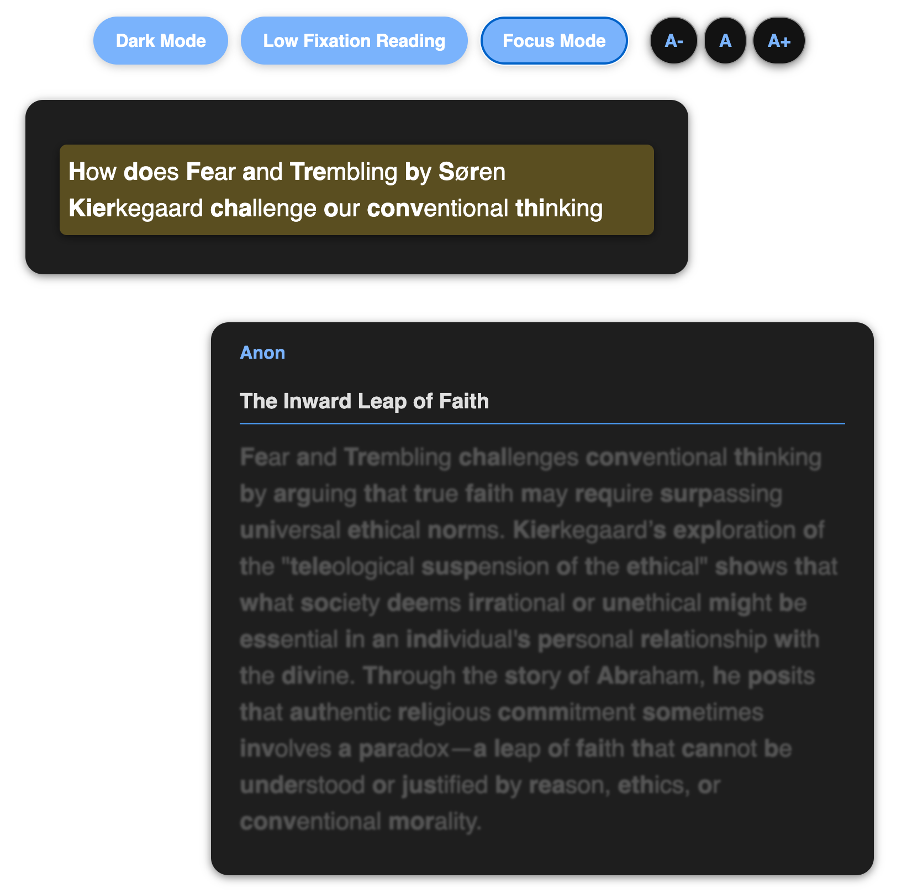

RationalGrid is a shared AI-powered grid. Ask a question, get an AI response, then branch into deeper follow-ups. Every answer becomes a connected node you can revisit and grow — together.
No setup, no accounts required. Just ask a question and start building.
Type any topic or question. The AI generates a structured response that becomes the first node on your grid.
Highlight any word or phrase in a response and ask a follow-up. Each new answer links to the exact concept it came from.
Your grid persists. Share the link so others can explore the same map, add their own branches, or pick up where you left off.
Traditional AI chats present knowledge as linear walls of text. RationalGrid structures information spatially so you can explore multiple directions at once.
Transform complex ideas into intuitive visual networks. Unlike linear conversations, knowledge maps let you explore multiple paths simultaneously and see relationships at a glance. Each node can be expanded to branch into new directions, creating a rich web of connected knowledge.
Try It Now →See how claims, evidence, and counterpoints connect instead of scrolling through a flat thread. RationalGrid’s graph-based approach structures information spatially, allowing for non-linear exploration while maintaining context.
Any node can be shown as a flowing conversation. Highlight important passages, add comments, and use focus mode with accessibility features to improve comprehension. Create using the graph tool, review using the reader view.
Try It Now →
A reading panel, an interactive graph, and an action toolbar — all visible at once so you never lose context.
Read the full AI response for the selected node. Select any text to explain, ask a follow-up, highlight, or comment directly.
An interactive node-and-edge map of your entire grid. Click to read, drag to rearrange, scroll to zoom. Always see the big picture.
One-click tools: Related Ideas, Pros & Cons, Blend nodes, Explore All. Each generates new connected branches on your map.
Everything you need to explore ideas thoroughly and make your thinking visible.
Every AI response is a node in a connected structure, not a flat block of text lost in a scrollback.
Highlight any phrase in a response to generate focused sub-branches linked to the exact concept.
Share a link. Multiple people explore the same map and add their own branches in real time.
Maps remain available, searchable, and linkable over time. Learning compounds instead of disappearing.
Export to PDF, JSON, or Markdown. Your knowledge is yours — use it in notes, presentations, or documentation.
Related Ideas, Pros & Cons, Blend, and Explore All — one-click tools to expand any concept in multiple directions.
An amazing free specialised AI tool to explore philosophical ideas around pretty much anything — from academic questions to films to… hamsters! All at one’s fingertips, in a matter of seconds, with in-built tools for a sophisticated, yet accessible dialectic. Bravo!
Create a structured idea map for a lesson, then share one URL so students explore the same concept together.
We live in an era of unprecedented information access, yet the quality of discourse often feels lacking. Echo chambers and motivated reasoning lead to people talking past each other rather than engaging meaningfully. We built RationalGrid because we believe meaningful exchanges happen when you can explore assumptions at a fundamental level and see how different starting points lead to different conclusions.
Language models provide unprecedented access to knowledge, but traditional chat interfaces limit their potential for deep learning. RationalGrid transforms AI interaction into an active, exploratory process where learners branch out in multiple directions, creating a personalized knowledge grid that evolves with their curiosity.
Speed matters
Cognitive flow is easily disrupted. Every interaction is optimized to minimize latency.
Simplicity enables depth
Complex ideas don’t need complex interfaces. Less UI, more thinking.
Persistence creates value
Knowledge grids accumulate value over time. Your work is never lost.
An open source project by Tom Berman. View source on GitHub →
Pick a starter question or ask your own. Your grid is one click away — free, no account required.